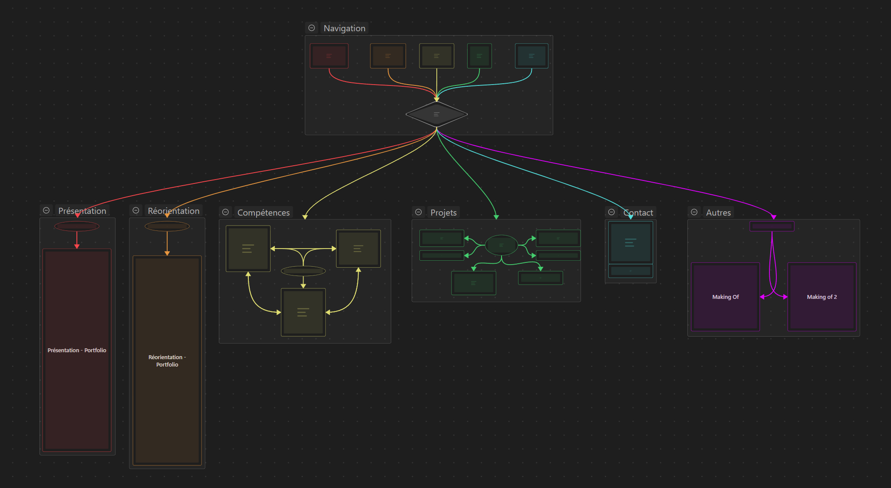
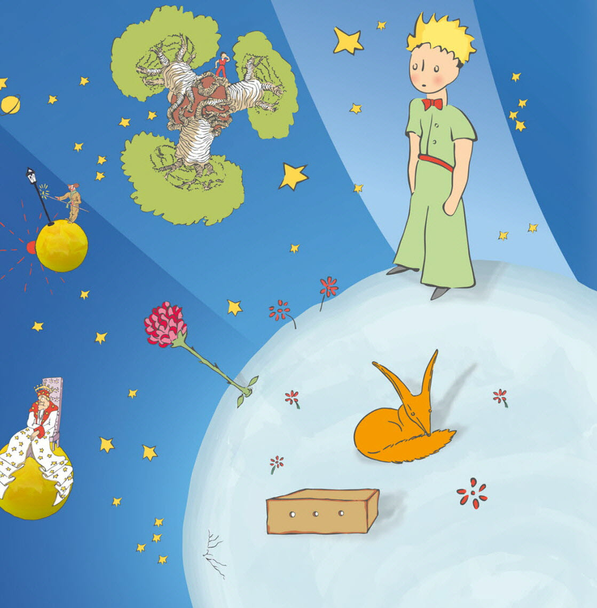
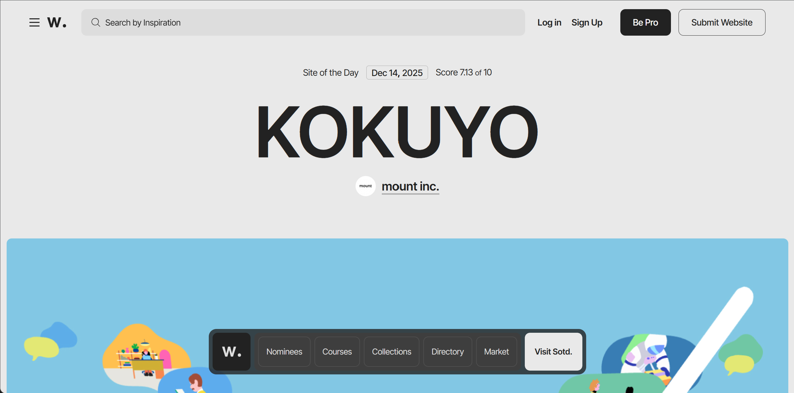
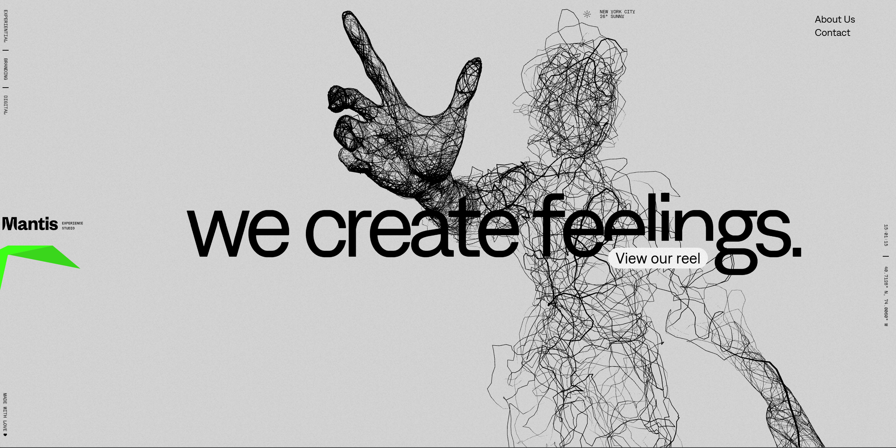
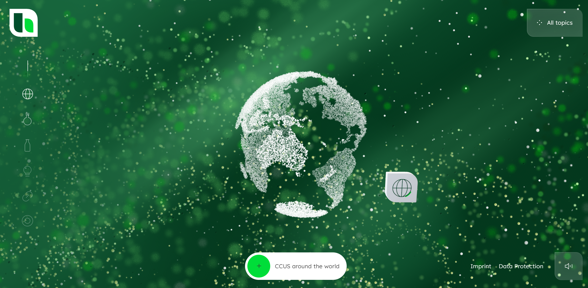
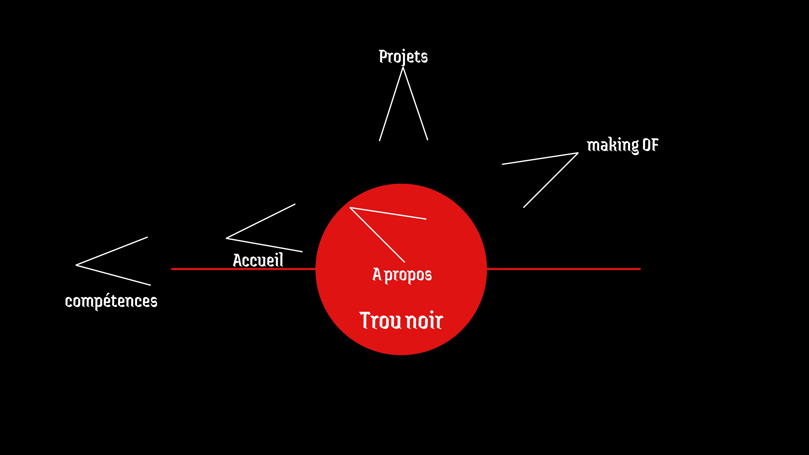
[ CLICK TO EXPAND ]
Transformer une simple intro en mise en scène narrative. La citation "un site doit être simple..." suivie de "but I have an authority issue" — une provocation qui annonce que ce ne sera pas un portfolio lambda.
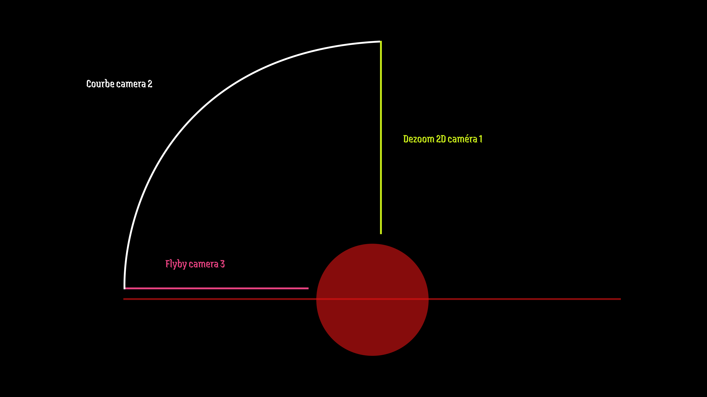
Créer une immersion totale dans l'espace. L'utilisateur se trouve à l'intérieur d'une skybox cosmique, pas devant — une vraie présence plutôt qu'une toile de fond.
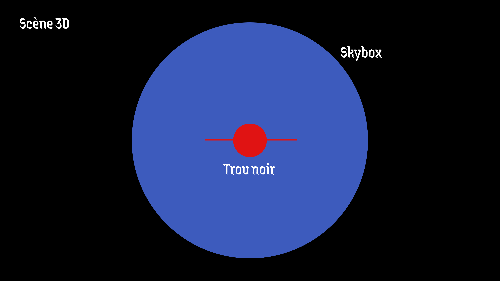
La citation de Jules Renard positionnée pile au centre du trou noir. Une mise en relation consciente : le trou noir met en évidence la citation, et inversement.
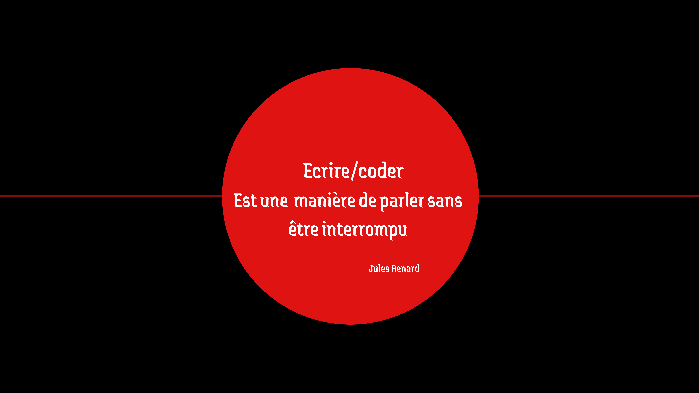
Raconter mon parcours via un schéma narratif littéraire classique. Intégrer des systèmes de particules 3D à côté du texte sans que l'un éclipse l'autre.
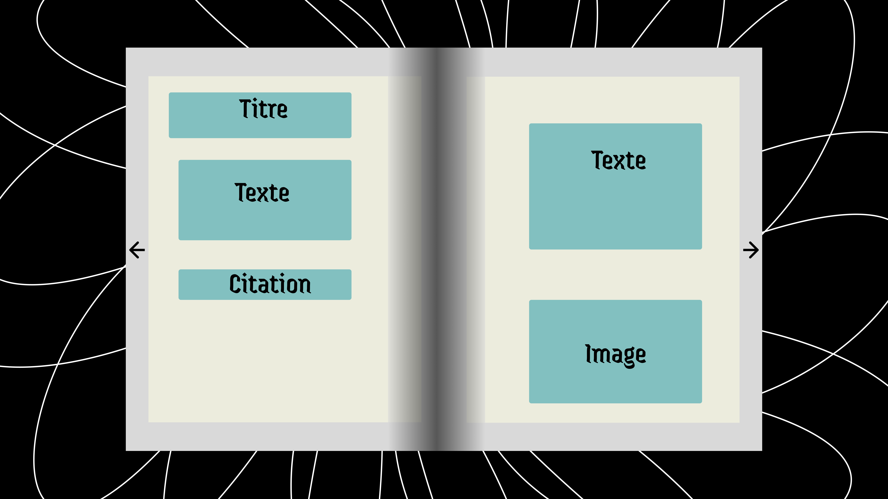
Le fond de chaque carte est un teaser visuel du projet. C'est montrer plutôt que raconter. Trouver l'équilibre entre sobriété et style.
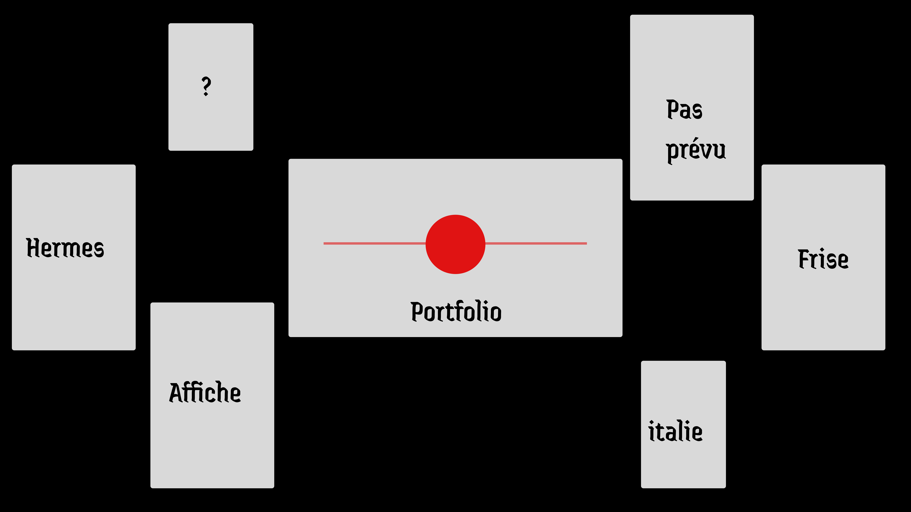
Présenter les skills sous forme de Bento Grid — layout asymétrique inspiré des keynotes Apple. Vision rapide et condensée comme un CV, mais esthétique.
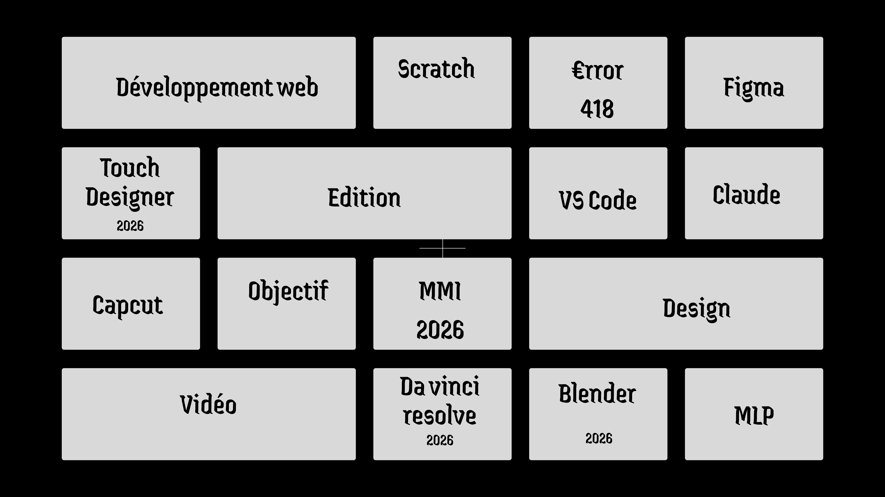